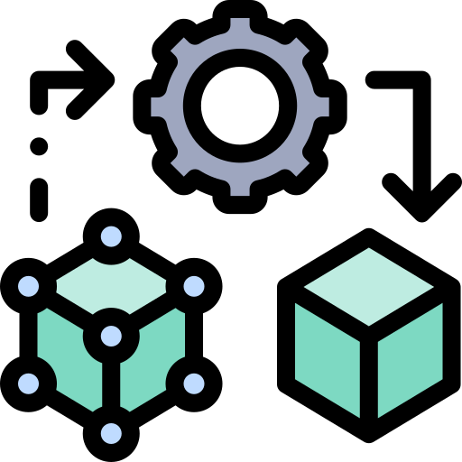

Research
Proyectos Actuales
El laboratorio está trabajando en diversos proyectos que abordan problemas complejos y buscan soluciones innovadoras:

Optimización en Algoritmos
Desarrollo de algoritmos para monitorear cultivos y optimizar el uso de recursos como agua y fertilizantes.

Simulación en Robótica
Implementación de modelos para mejorar la interacción humano-robot en entornos industriales.

Diagnóstico Asistido por IA
Creación de herramientas para apoyar a médicos en la detección temprana de enfermedades críticas.
Áreas de Investigación
Nuestras principales áreas de investigación incluyen:

Algoritmos de Aprendizaje Automático
Diseño de modelos avanzados para predicción y toma de decisiones.

Metaheurísticas
Desarrollo de técnicas para resolver problemas complejos de optimización.

Simulación Computacional
Modelado y simulación de procesos en biología, robótica y energía.